Chapter 2 Veri Görselleştirme Örnekleri
library(tidyverse);library(magrittr);library(readxl);library(ggridges);library(ggalt);library(gridExtra)
setwd("C:/Users/datanerd/Desktop/Github/rViz/data")
v1 <- read_excel("v1.xlsx")
v2 <- read.csv("v2.csv")
v3 <- read.csv("v3.csv")
v4 <- read.csv("v4.csv")
v5 <- read.csv("v5.csv")
v6 <- read.csv("v6.csv")
v7 <- read.csv("v7.csv")2.1 Bar
## # A tibble: 10 x 4
## Yıl Bölge Tiyatro Sinema
## <dbl> <chr> <dbl> <dbl>
## 1 2018 Kuzeydogu Anadolu 59753 694006
## 2 2018 Ortadogu Anadolu 250350 1300611
## 3 2018 Güneydogu Anadolu 245045 3061857
## 4 2018 Istanbul 3003641 20509072
## 5 2018 Bati Marmara 176805 2521715
## 6 2018 Ege 842763 8751750
## 7 2018 Dogu Marmara 828997 7642209
## 8 2018 Bati Anadolu 1121486 7616146
## 9 2018 Akdeniz 594566 6865240
## 10 2018 Orta Anadolu 260809 2066186
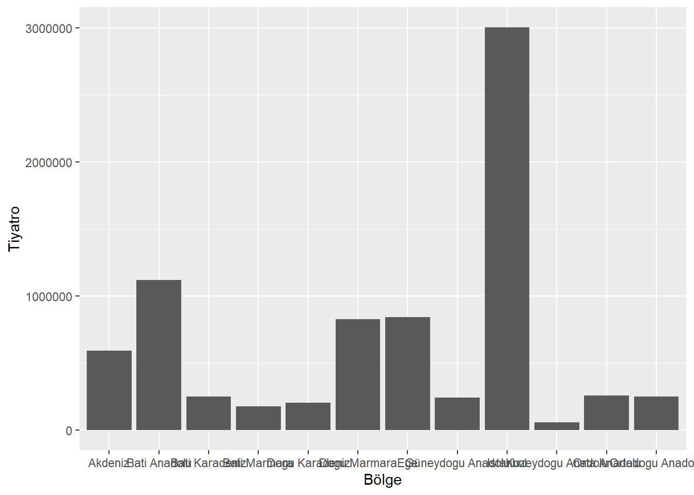
ggplot(data = v1) +
geom_bar(aes(x = `Bölge`, y = Tiyatro, fill = `Bölge`), stat = "identity", alpha = 0.5)
ggplot(v2) +
geom_bar(aes(x = `Bölge`, y = `Sayı`, fill = Tip), position = "dodge", stat = "identity")
## Yıl Bölge Tip Sayı
## 1 2018 Kuzeydogu Anadolu Tiyatro 59753
## 2 2018 Ortadogu Anadolu Tiyatro 250350
## 3 2018 Güneydogu Anadolu Tiyatro 245045
## 4 2018 Istanbul Tiyatro 3003641
## 5 2018 Bati Marmara Tiyatro 176805
## 6 2018 Ege Tiyatro 842763
## 7 2018 Dogu Marmara Tiyatro 828997
## 8 2018 Bati Anadolu Tiyatro 1121486
## 9 2018 Akdeniz Tiyatro 594566
## 10 2018 Orta Anadolu Tiyatro 260809ggplot(v2) +
geom_bar(aes(x = `Bölge`, y = `Sayı`, fill = Tip), position = "dodge", stat = "identity") +
labs(x = "Bölgeler",
y = "Seyirci Sayıları",
title = "Tiyatro ve Sinema İzleyici Sayıları",
subtitle = "Yıl: 2018",
caption = "Kaynak: TÜİK",
fill = NULL)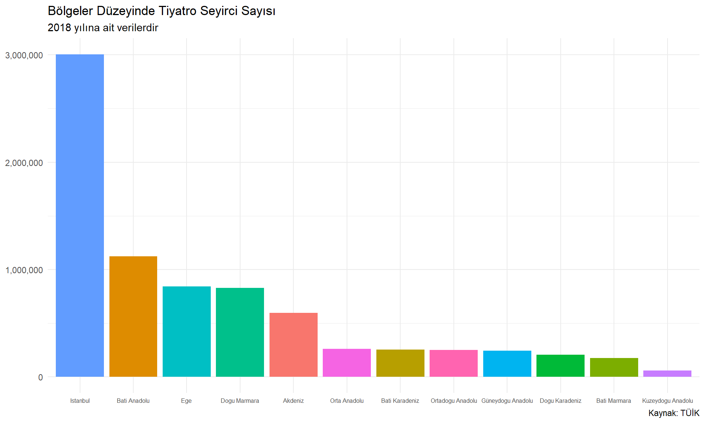
ggplot(v2) +
geom_bar(aes(x = `Bölge`, y = `Sayı`, fill = Tip), position = "dodge", stat = "identity") +
labs(x = "Bölgeler",
y = "Seyirci Sayıları",
title = "Tiyatro ve Sinema İzleyici Sayıları",
subtitle = "Yıl:2018",
caption = "Kaynak: TÜİK",
fill = NULL) +
scale_fill_manual(values = c("red", "blue"))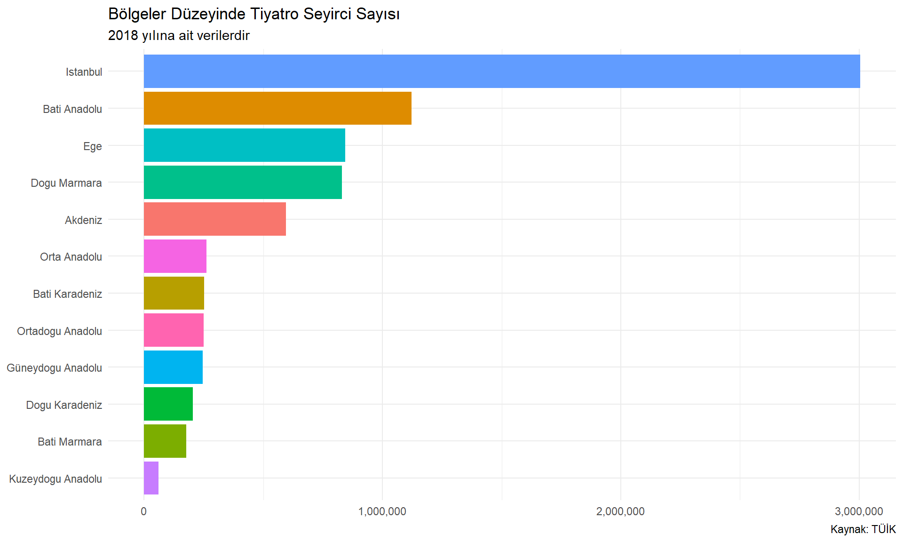
ggplot(v2)+
geom_bar(aes(x = `Bölge`, y = `Sayı`, fill = Tip), position = "dodge", stat = "identity") +
labs(x = "Bölgeler",
y="Seyirci Sayıları",
title = "Tiyatro ve Sinema İzleyici Sayıları",
subtitle = "Yıl: 2018",
caption = "Kaynak: TÜİK",
fill= NULL) +
scale_fill_manual(values = c("red", "blue")) +
coord_flip()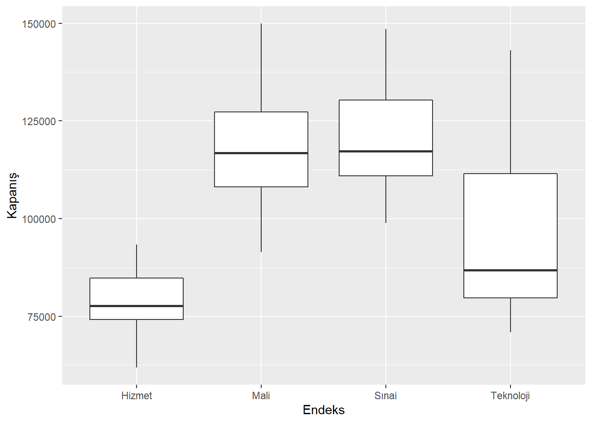
2.2 Histogram
## Tarih ToplamİşlemHacmi
## 1 07-05-2010 3454028
## 2 10-05-2010 3221675
## 3 11-05-2010 2708472
## 4 12-05-2010 3248819
## 5 13-05-2010 3001316
## 6 14-05-2010 2702609
## 7 17-05-2010 2242048
## 8 18-05-2010 2263218
## 9 20-05-2010 2735390
## 10 21-05-2010 3132812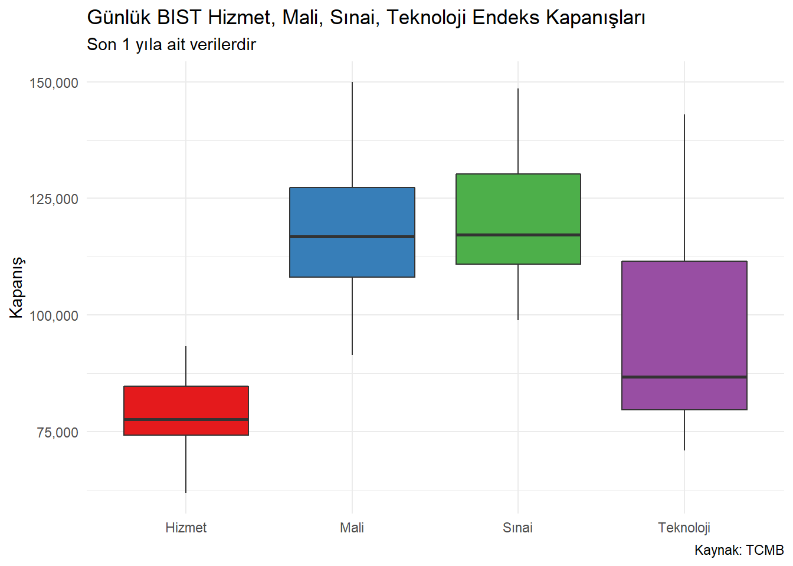
ggplot(v3) +
geom_histogram(aes(x = `ToplamİşlemHacmi`), binwidth = 500000, fill = "orange") +
labs(title = "Aralık genişliği 500.000")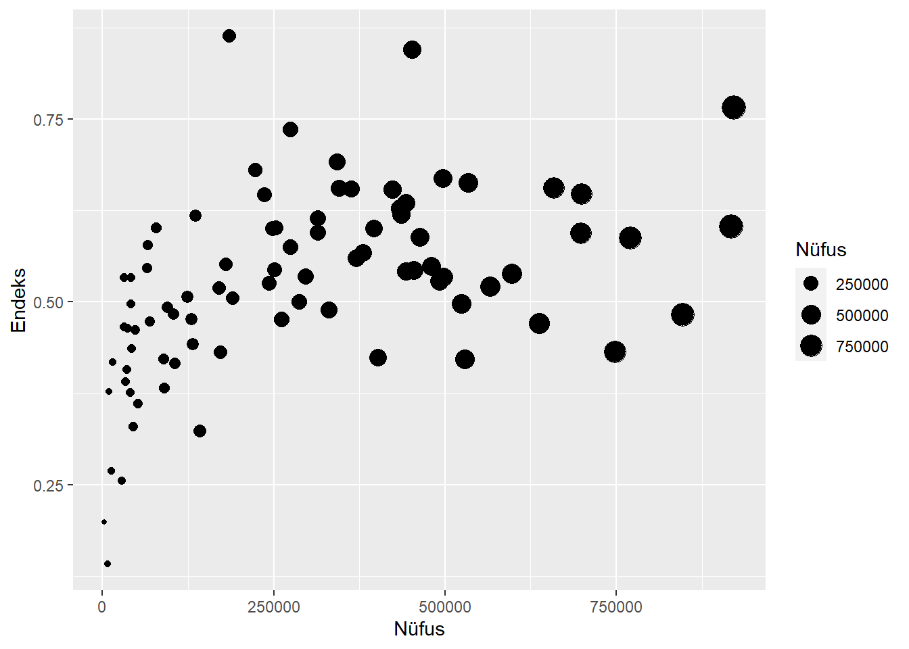
ggplot(v3) +
geom_histogram(aes(x = `ToplamİşlemHacmi`), binwidth = 1000000, fill = "orange") +
labs(title = "Aralık genişliği 1.000.000")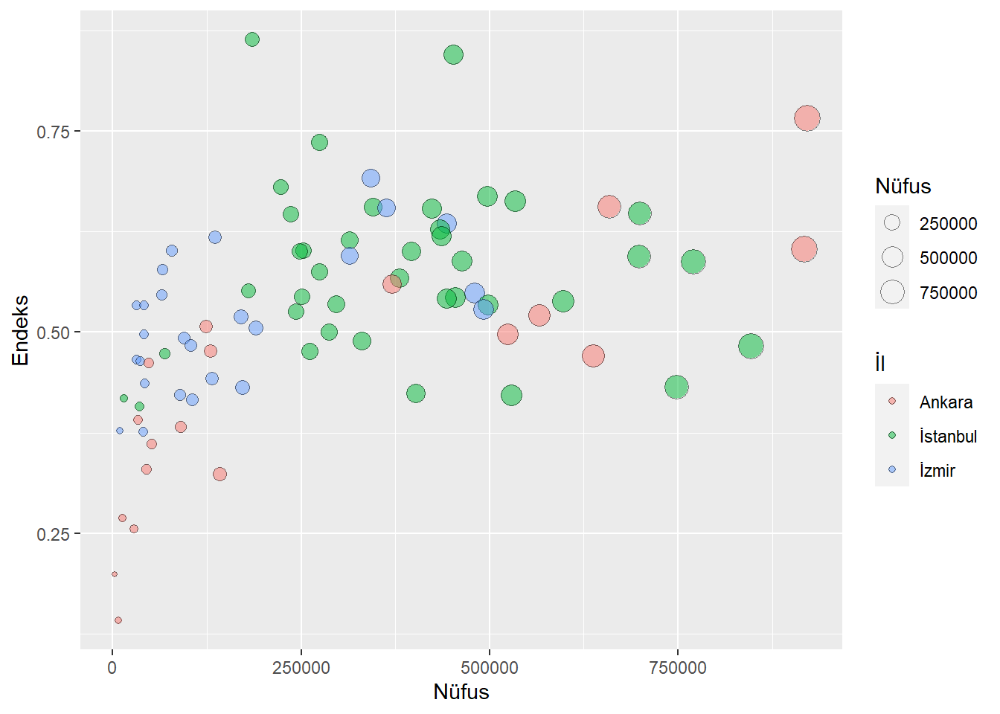
ggplot(v3, aes(x = `ToplamİşlemHacmi`)) +
geom_histogram(aes(y = ..density..), binwidth = 1000000, fill = "orange") +
geom_density(colour = "purple") +
labs(x = "Toplam İşlem Hacmi",
y = "Yoğunluk",
caption = "Kaynak: EVDS")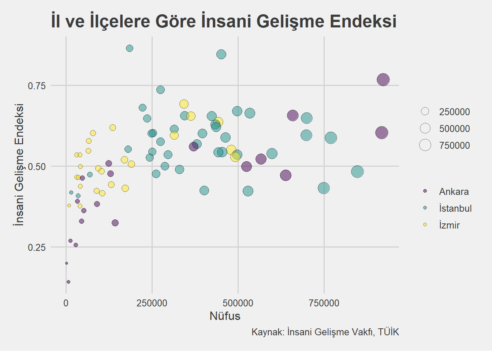
2.3 Kutu ve Violin
## Tarih Endeks KapanışFiyatları
## 1 2019-05-07 Hizmet 66992.88
## 2 2019-05-08 Hizmet 66524.43
## 3 2019-05-09 Hizmet 65714.58
## 4 2019-05-10 Hizmet 65688.66
## 5 2019-05-13 Hizmet 63905.14
## 6 2019-05-14 Hizmet 64479.48
## 7 2019-05-15 Hizmet 63740.52
## 8 2019-05-16 Hizmet 63449.50
## 9 2019-05-17 Hizmet 62665.98
## 10 2019-05-20 Hizmet 63035.48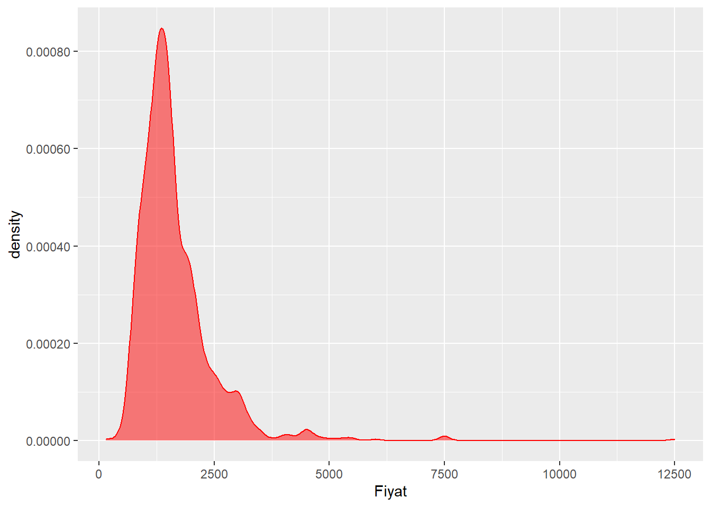
ggplot(v4) +
geom_boxplot(aes(x = Endeks, y = `KapanışFiyatları`, fill = Endeks)) +
scale_fill_brewer(palette = "Set1")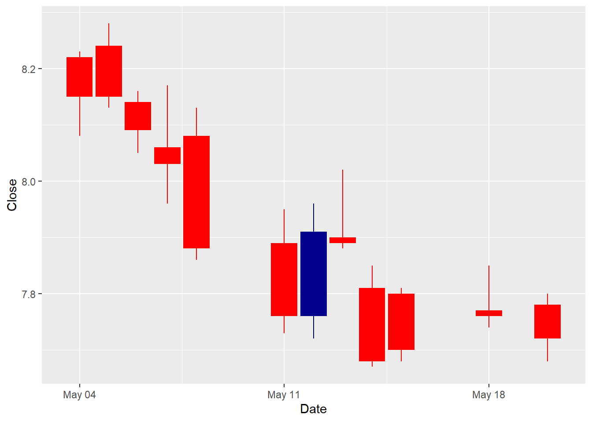
ggplot(v4, aes(x = Endeks, y = `KapanışFiyatları`, fill = Endeks)) +
geom_boxplot() +
geom_violin(alpha = 0.5)+
scale_fill_brewer(palette = "Set1") +
labs(x = "Endeksler",
y="Kapanış Fiyatları",
caption = "Kaynak: EVDS")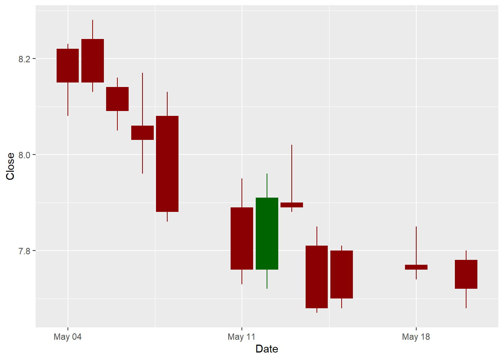
2.4 Ridgeline
## Tarih Kur Alıs
## 1 2010-05-11 Dolar 1.5117
## 2 2010-05-12 Dolar 1.5282
## 3 2010-05-13 Dolar 1.5213
## 4 2010-05-14 Dolar 1.5107
## 5 2010-05-17 Dolar 1.5229
## 6 2010-05-18 Dolar 1.5370
## 7 2010-05-20 Dolar 1.5291
## 8 2010-05-21 Dolar 1.5727
## 9 2010-05-24 Dolar 1.5756
## 10 2010-05-25 Dolar 1.5647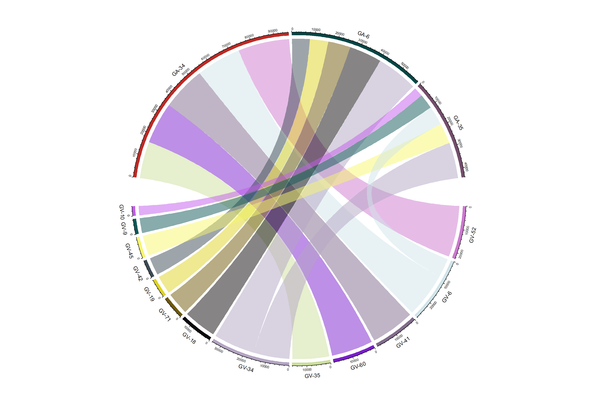
ggplot(v4, aes(x = `KapanışFiyatları`, y = Endeks, fill = Endeks))+
geom_density_ridges() +
scale_fill_brewer(palette = "Set1")+
labs(x = "Kapanış Fiyatları",
y = "Endeksler",
caption = "Kaynak: EVDS")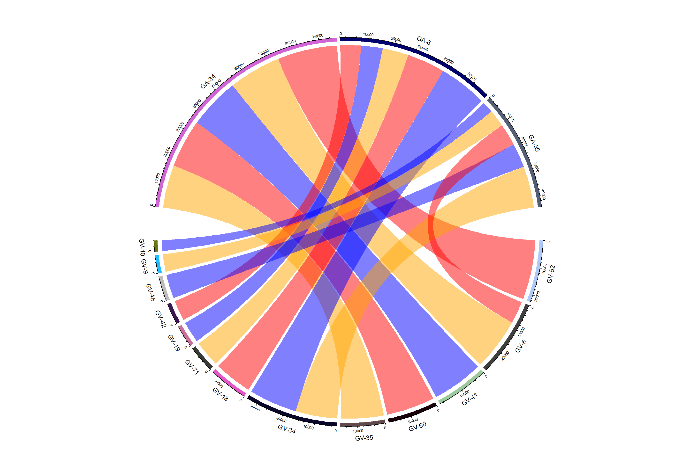
2.5 Çizgi ve Nokta
## Tarih Kur Alıs
## 1 2010-05-11 Dolar 1.5117
## 2 2010-05-12 Dolar 1.5282
## 3 2010-05-13 Dolar 1.5213
## 4 2010-05-14 Dolar 1.5107
## 5 2010-05-17 Dolar 1.5229
## 6 2010-05-18 Dolar 1.5370
## 7 2010-05-20 Dolar 1.5291
## 8 2010-05-21 Dolar 1.5727
## 9 2010-05-24 Dolar 1.5756
## 10 2010-05-25 Dolar 1.5647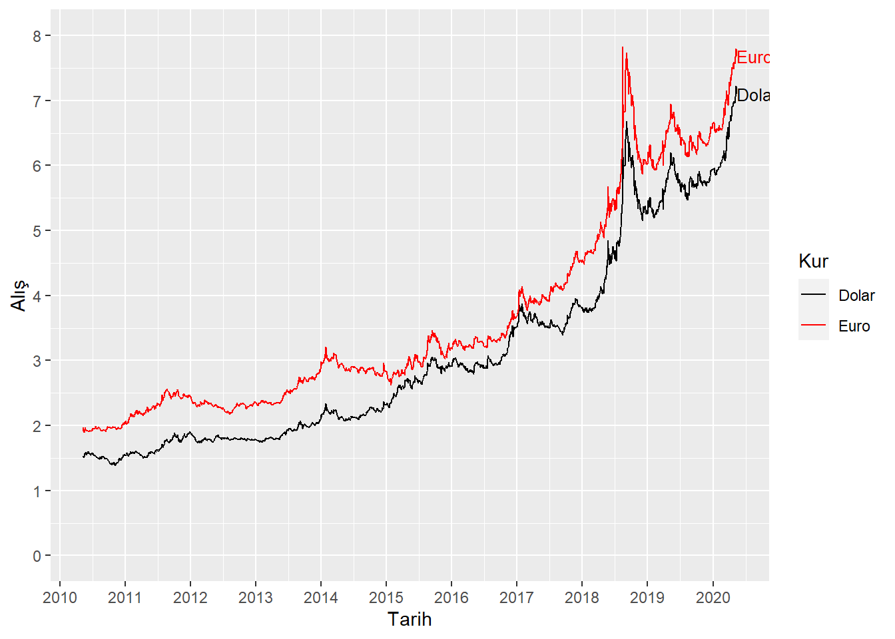
ggplot(v5, aes(x = Tarih, y = `Alıs`, color = Kur)) +
geom_line() +
geom_point(size=0.1) +
scale_x_date(date_labels = "%Y", date_breaks = "year")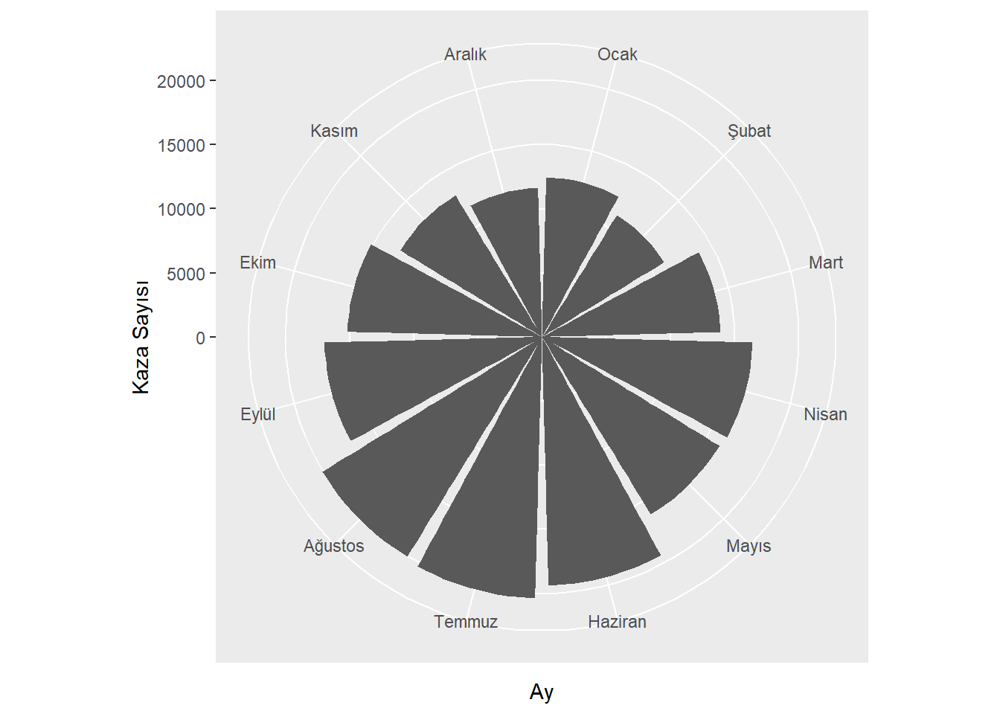
ggplot(v5, aes(x = Tarih, y = `Alıs`, color = Kur)) +
geom_line() +
geom_point(size=0.1) +
scale_x_date(date_labels = "%Y", date_breaks = "year") +
scale_color_brewer(palette = "Set1")+
labs(x = "Yıllar",
y="Alış-TL Değeri",
caption = "Kaynak: EVDS")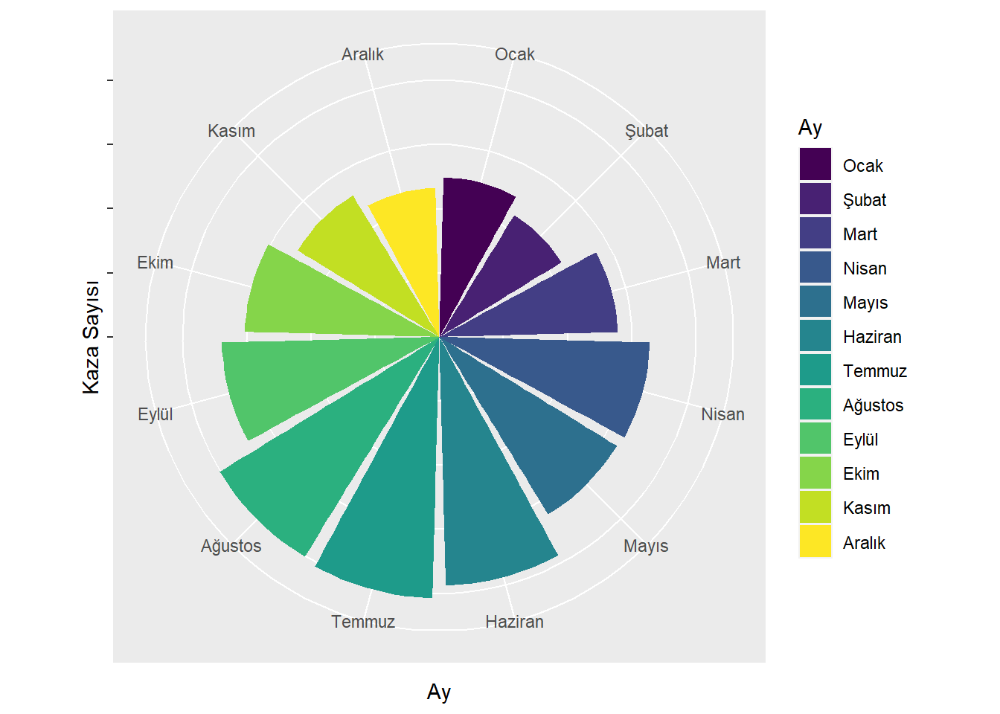
2.6 Dumbbell
## İl Erkek Kadın
## 1 Adana 27.98806 25.01280
## 2 Adıyaman 27.78098 24.64732
## 3 Afyonkarahisar 26.08880 23.28398
## 4 Ağrı 26.37972 21.93901
## 5 Amasya 27.61038 24.91493
## 6 Ankara 28.31499 25.84005
## 7 Antalya 28.47383 25.54322
## 8 Artvin 29.84052 26.51038
## 9 Aydın 28.13270 24.85608
## 10 Balıkesir 27.79999 24.84358ggplot(v6) +
geom_dumbbell(aes(x = Erkek, xend = `Kadın`, y = `İl`),
size_x = 2, size_xend = 2,
colour_x = "blue", colour_xend = "pink2")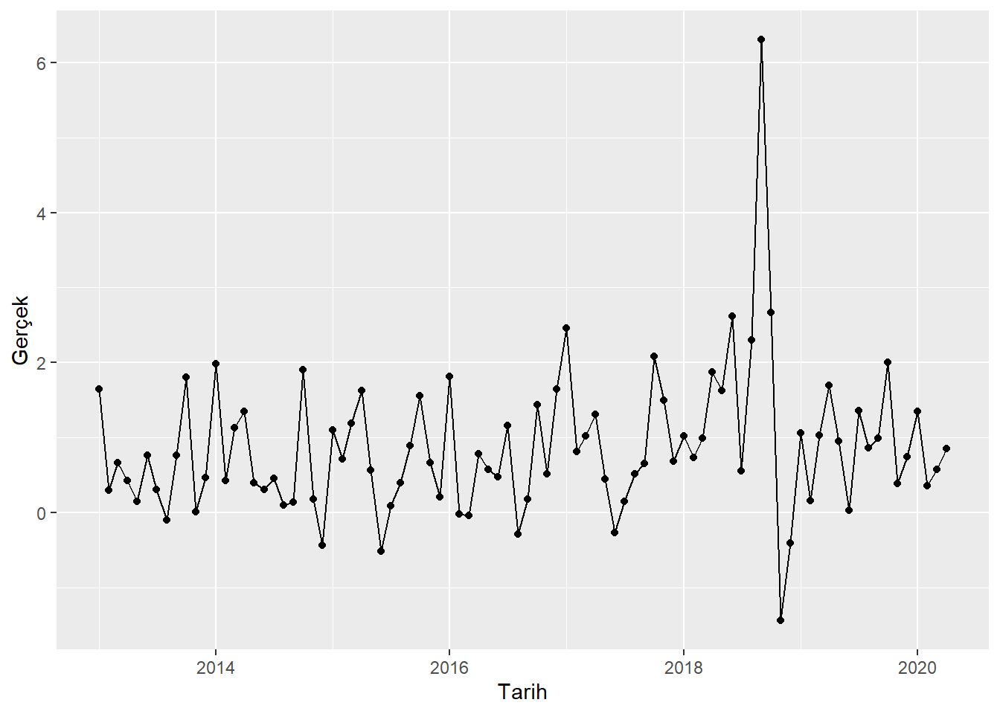
ggplot(v6) +
geom_dumbbell(aes(x = Erkek, xend = `Kadın`, y = `İl`),
size_x = 2, size_xend = 2,
colour_x = "blue", colour_xend = "pink2") +
theme_classic(base_size = 8) +
labs(title = "İllere Göre Ortalama İlk Evlenme Yaşları: 2019 Yılı",
subtitle = "Kaynak: TÜİK",
x = "Yaş",
y = "İller")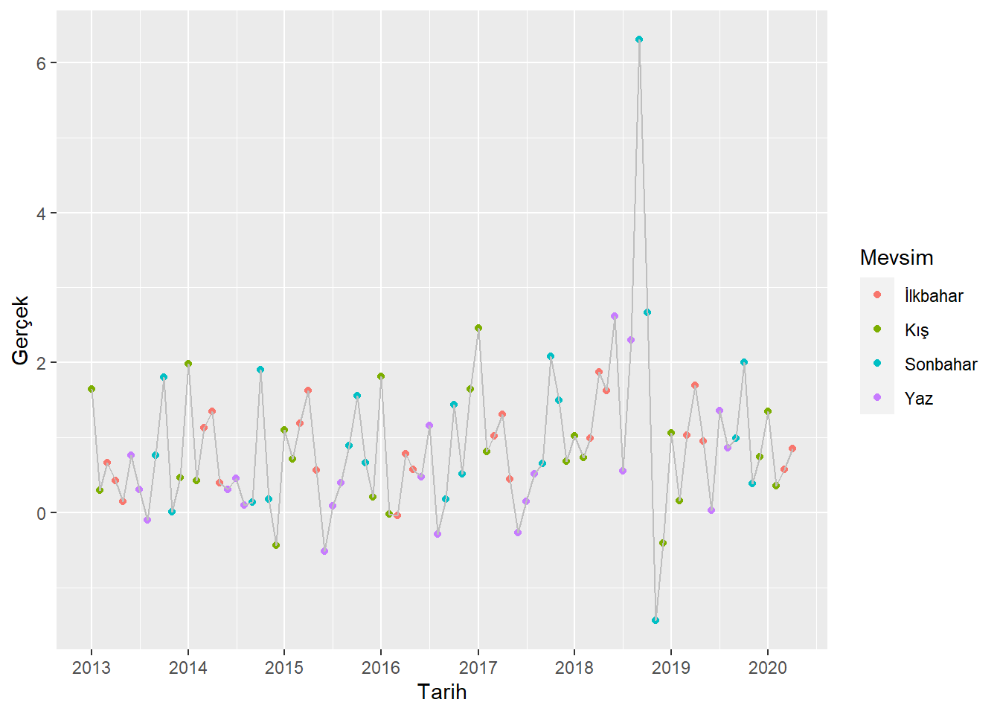
2.7 Isı
## İller Yıllar Satıs
## 1 Adana 2019 29574
## 2 Adıyaman 2019 7116
## 3 Afyonkarahisar 2019 9442
## 4 Ağrı 2019 2132
## 5 Aksaray 2019 6526
## 6 Amasya 2019 5237
## 7 Ankara 2019 132486
## 8 Antalya 2019 65258
## 9 Ardahan 2019 185
## 10 Artvin 2019 2044
ggplot(v7) +
geom_tile(aes(x = `Yıllar`, y = `İller`, fill = `Satıs`), colour = "grey") +
scale_fill_distiller(name = "Toplam Satışlar (Adet)",
palette = "Spectral") +
theme_classic(base_size = 8)+
labs(title = "Konut Satış İstatistikleri",
subtitle = "Veri: EVDS")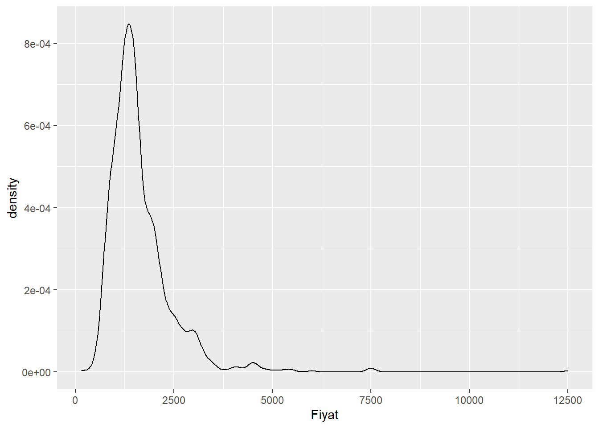
2.8 Kategori Ayırma
ggplot(v4, aes(x = Tarih, y = `KapanışFiyatları`, color = Endeks)) +
geom_line() +
geom_point() +
scale_x_date(date_labels = "%m-%Y", date_breaks = "3 month") +
labs(x = "",
y = "Kapanış Fiyatları",
caption = "Kaynak: EVDS")+
theme_classic()
ggplot(v4, aes(x = Tarih, y = `KapanışFiyatları`, color = Endeks)) +
geom_line() +
geom_point() +
scale_x_date(date_labels = "%m-%Y", date_breaks = "3 month") +
labs(x = "facet_grid(Endeks~.)",
y = "Kapanış Fiyatları",
caption = "Kaynak: EVDS") +
theme_classic() +
facet_grid(Endeks~.)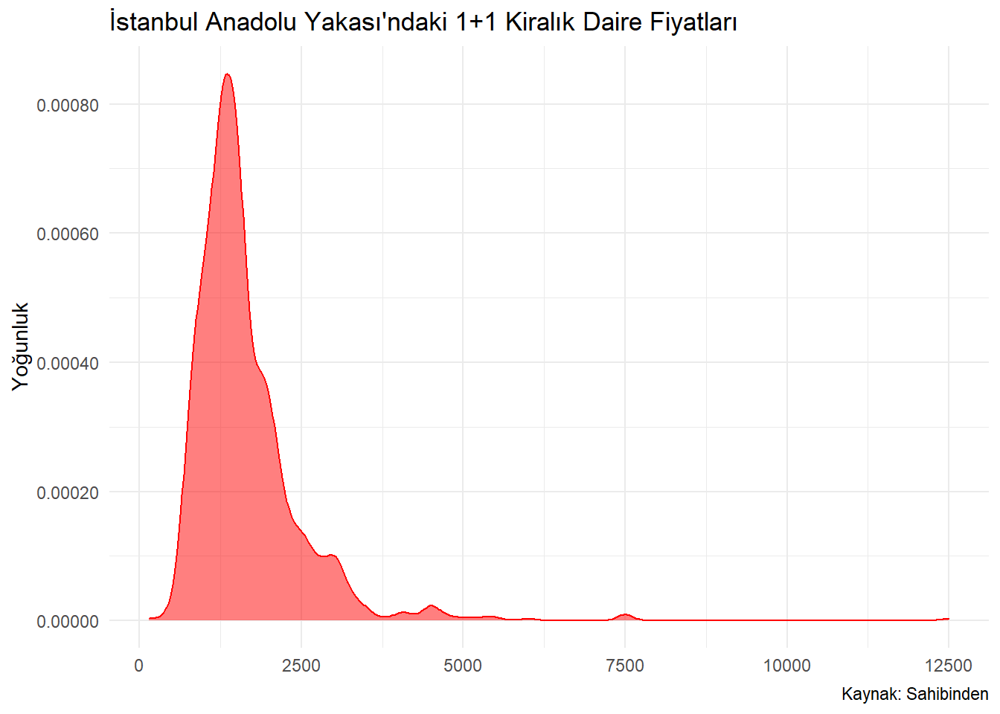
ggplot(v4, aes(x = Tarih, y = `KapanışFiyatları`, color = Endeks)) +
geom_line() +
geom_point() +
scale_x_date(date_labels = "%m-%Y", date_breaks = "3 month") +
labs(x = "facet_grid(.~Endeks)",
y = "Kapanış Fiyatları",
caption = "Kaynak: EVDS") +
theme_classic() +
facet_grid(.~Endeks)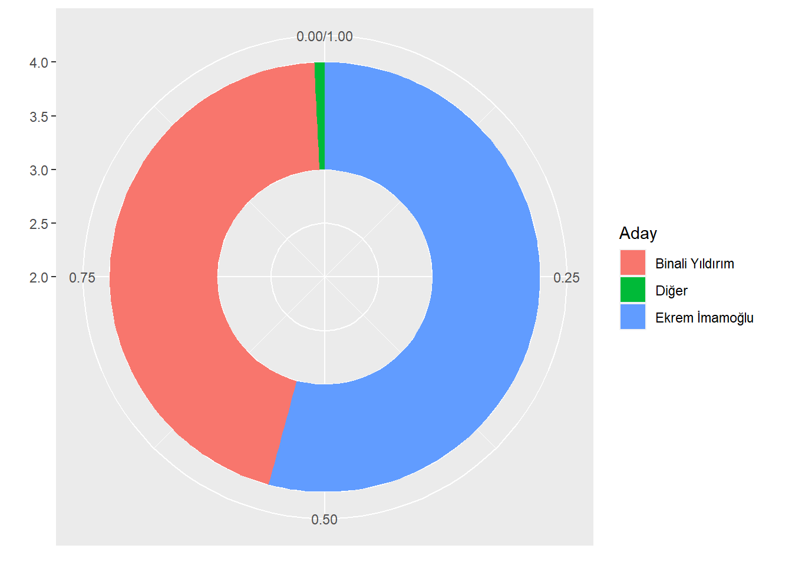
2.9 Grafik Birleştirme
g0 <- ggplot(v4, aes(x = Tarih, y = `KapanışFiyatları`, color = Endeks)) +
geom_line() +
geom_point() +
scale_x_date(date_labels = "%m-%Y", date_breaks = "3 month")
g1 <- g0 + labs(title = "Tema: theme_bw()",
x = "Tarih",
y = "Kapanış Fiyatları",
caption = "Kaynak: EVDS") +
theme_bw()
g2 <- g0 + labs(title = "Tema: theme_minimal()",
x = "Tarih",
y = "Kapanış Fiyatları",
caption = "Kaynak: EVDS") +
theme_minimal()
g3 <- g0 + labs(title = "Tema: theme_classic()",
x = "Tarih",
y = "Kapanış Fiyatları",
caption = "Kaynak: EVDS") +
theme_classic()
g4 <- g0 + labs(title = "Tema: theme_grey()",
x = "Tarih",
y = "Kapanış Fiyatları",
caption = "Kaynak: EVDS")+
theme_grey()
grid.arrange(g1, g2, g3, g4)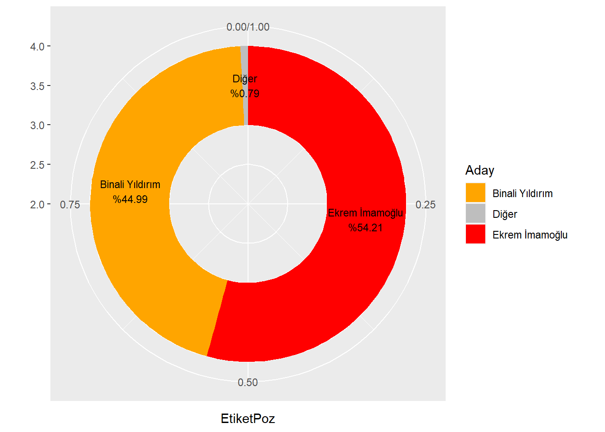
2.10 Tema Oluşturma
g5 <- ggplot(v4, aes(x = Tarih, y = `KapanışFiyatları`, color = Endeks)) +
geom_line() +
geom_point() +
scale_x_date(date_labels = "%m-%Y", date_breaks = "3 month") +
labs(title = "Hizmet, Mali, Sınai, Teknoloji Endeksleri Kapanış Fiyatları",
x = "Tarih",
y = "Kapanış Fiyatları",
caption = "Kaynak: EVDS")
rpydaneogrendim <- theme(plot.title = element_text(hjust = 0.5,size = 15,face = "bold"),
plot.caption = element_text(hjust = 0.5),
plot.background = element_rect(fill = "antiquewhite"),
panel.background = element_rect(fill = "antiquewhite"),
axis.text=element_text(colour = "black",size = 10),
axis.line = element_blank(),
legend.title = element_blank(),
legend.position = "top",
legend.background = element_rect(fill = "antiquewhite"),
legend.key = element_rect(fill = "antiquewhite"))
g5 + rpydaneogrendim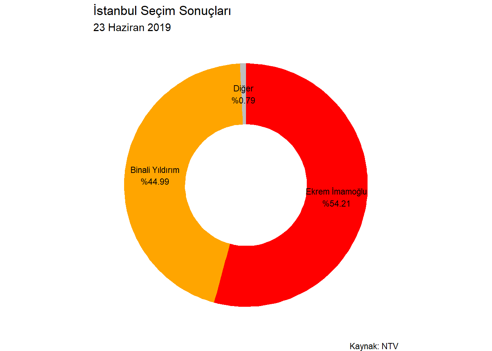